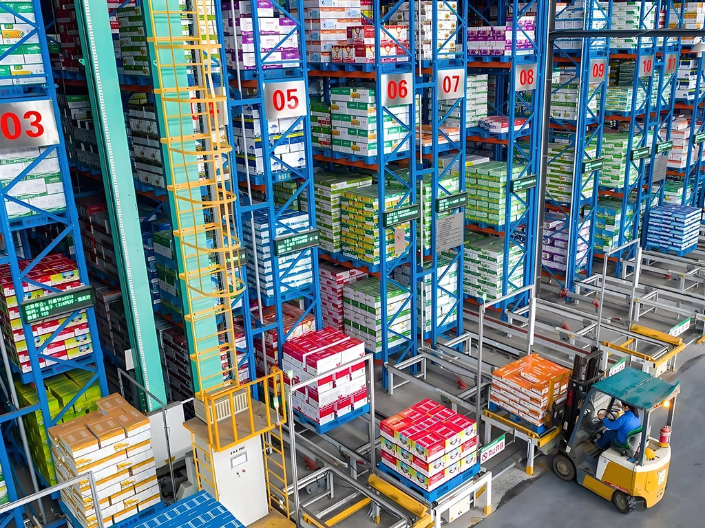

Forks or wheels do not clear the base
Record entry direction, tine and wheel geometry, minimum clearance and transitions.

Plastic load carriers for warehouse operations
A pallet can meet the load and still fail the operation. Review forks, support, conveyors, sensors, stacking, temperature and handling frequency as one system.
The page is organised around operational failure points, not a generic industry introduction.
Record entry direction, tine and wheel geometry, minimum clearance and transitions.
Beam span, support width, point loads and duration alter the pallet condition.
Chain, roller, sensor and centring positions must match the actual base geometry.
Inspection, segregation and retirement criteria belong in the operating plan.
Review for defined beam support and repeated forklift handling. Confirm span, distribution, duration and temperature.
Review when conveyor contact, block stacking or bottom-deck continuity is the critical interface.
Review where empty return volume and floor use matter more than rack support.
Review when the handling unit needs side protection, part containment or line-side access.
03 / Decision boundary
General warehouse guidance cannot guarantee that a product fits a specific rack, conveyor, load or temperature. The final record should identify the reviewed conditions and unresolved points.
Request an application reviewEach resource has a specific place in the selection path and leads back to the model or operating review.
Separate clear span, load distribution and storage duration from the headline value.
Add rack detailsUse the actual equipment geometry rather than relying on a four-way-entry label.
Add equipment detailsAgree the use case, observation period, checks and stop conditions before scale-up.
Discuss a review planThe prototype shows how application context can reach the existing production enquiry workflow without changing its backend.